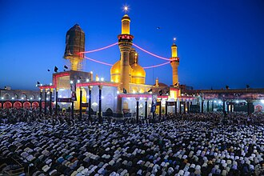

概要
Le Sanctuaire Al-Kadhimiya est un mausolée situé à Bagdad. Musa al-Kazim et Muhammad al-Jawad, respectivement le 7e et le 9e imam, chez les duodécimains chiites, y sont enterrés. Cheikh Al-Moufid et Nasir ad-Din at-Tusi y sont également enterrés. Il est un lieu de pèlerinage important pour les chiites.
مسجد الكاظمية هو مسجد وضريح شيعي إمامي ، يقع في منطقة الكاظمية في العاصمة العراقية بغداد. يضم المسجد مرقدي الإمامين السابع والتاسع لدى الشيعة الإثني عشرية، وهما موسى الكاظم وحفيده محمد الجواد. كما يضم المسجد ضمن أروقته ضريحي العالِمين التاريخيين الشيخ المفيد والشيخ نصير الدين الطوسي. يوجد بجوار المسجد مباشرة ضريحان أصغر حجماً، ينتميان إلى الأخوين السيد راضي والسيد مرتضى والقاضي أبو يوسف اللولبي
The Kadhimiya Mosque, also known as the Jawadayn Shrine , is the mausoleums of the seventh and ninth Shia Imams, respectively Musa al-Kazim and his grandson Muhammad al-Jawad, located in the Kazimiya suburb of Baghdad, in the Baghdad Governorate of Iraq. It is a holy site in Shia Islam.
El-Kazımiye Camii, Irak'ın başkenti Bağdat'ta bulunan bir Şii cami ve türbedir. Cami, MS 762 yılında inşa edilmiş olup Kazımiye ilçesinde yer almaktadır.
Masjid Al-Kadhimiya adalah sebuah masjid dan tempat suci Islam Syiah yang terletak di pinggiran Kādhimayn Baghdad, Irak. Masjid ini berisi makam dari Imamiyyah ketujuh Shī‘ī Imām Mūsā al-Kāẓim dan Imamiyyah Shī‘ī Imām Muhammad al-Jawad yang kesembilan. Juga terkubur di dalam masjid ini adalah para ulama sejarah terkenal, Syekh Mufid dan Syekh Naṣīr ad-Dīn aṭ-Ṭūsi.
مسجد کاظمیہ سے مراد بغداد میں واقع شیعہ ائمہ میں سے موسیٰ کاظم اور نویں امام محمد تقی کے مزارات ہیں اسی سے متصل ایک مسجد بھی ہے۔
Die al-Kazimiyya-Moschee ist eine Moschee in al-Kazimiyya, einem Vorort von Bagdad im Irak.
Masjid al-Kāẓimiyyah es un santuario situado en el barrio de Kādhimayn en Bagdad, Irak. Contiene las tumbas del séptimo imaní Shī'ī Imām Mūsā al-Kāẓim y el noveno imaní Shī'ī Imām Muhammad al-Jawad. También enterrados en esta mezquita están los famosos eruditos históricos, Shaykh Mufīd y Shaykh Naṣīr ad-Dīn aṭ-Ṭūsi. Directamente adyacentes a la mezquita hay dos santuarios más pequeños, pertenecientes a los hermanos Sayyid Raḍī y Sayyid Murṫadhā.
A Mesquita de Alcazimia ou Santuário de Alcazimia ou é um complexo religioso xiita duodecimano situado em Alcazimia, em Baguedade, no Iraque. Desenvolveu-se em torno dos túmulos de Muça Alcazim e seu neto Maomé Aljauade, respectivamente o sétimo e o nono imames reconhecidos pelos duodecimanos. A presença dos dois túmulos deu origem ao nome Alcazimia e à forma dual Alcazimém. O local originou-se de um cemitério utilizado durante o Califado Abássida, conhecido como Cemitério dos Coraixitas. Após o sepultamento de Muça Alcazim em 799 e de Maomé Aljauade em 835, tornou-se um dos principais centros de peregrinação xiita do Iraque.
De Al-Kadhimiya-moskee is een sjiitisch heiligdom in de Irakese hoofdstad Bagdad, in de wijk Kadhimiya.
卡济米耶清真寺或卡济迈因清真寺，全称为伊玛目穆萨·卡齐姆与穆罕默德·贾瓦德圣陵，位于伊拉克首都巴格达的卡济米耶区，是一座由清真寺和陵墓组成的宏伟建筑群。伊斯兰教什叶派主流派别十二伊玛目派尊奉的第七位伊玛目穆萨·卡齐姆和第九位伊玛目穆罕默德·塔基·贾瓦德即安葬于此，从而使该寺成为什叶派圣寺。一些著名的历史学家如谢赫穆菲德和纳西尔丁·图西也安葬于此。紧邻该寺的还有两座较小的陵墓，分别安葬着编译《辞章之道》的两兄弟谢赫拉迪和谢赫穆尔塔达。
알 카디미야 사원(Al-Kadhimiya Mosque, مَـسـجـد الـكَـاظـمـيّـة)은 이라크 바그다드의 시아파 거주지역인 카디미야(Kadhimiya)에 위치한 이슬람 사원이다. 이 사원은 이슬람 세계에서 가장 중요한 사원 중 하나로 금으로 장식한 돔과 뾰족탑이 유명하다. 이슬람 시아파에서 예언자의 후계자로 추앙 받는 7대 이맘 무사 알 카딤(Musa al-Kadhim)과 그의 손자 9대 이맘 모하메드 알 자와드(Muhammed al-Jawad)가 이곳 일대에 묻혀 있으며, 현재의 건물은 1502년부터 1524년까지 사파비 왕조의 이스마일 1세가 복원한 것으로 추정된다.
मस्जिद अल-कानीमियाह; इराक की राजधानी बगदाद के काधमैन उपनगर में स्थित एक तीर्थस्थल और मस्जिद है इसमें सातवे शिया इमाम हजरत इमाम मूसा अल काजिम और नौवे शिया इमाम, हजरत इमाम मुहम्मद अल-जवाद की कब्र है जिससे यह स्थान शिया मुसलमानों का एक महत्वपूर्ण धार्मिक स्थल है।
Мечеть аль-Казимийя — шиитская святыня, расположенная в районе Багдада Кадимия. Также называется «Золотая мечеть».
al-Kāżimiyyah-moskén är en helgedom i al-Kāżimiyyah, som är en förort i norra Bagdad i Irak. Här vilar tolvgrenens sjunde shiaimam Musa al-Kazim, och den nionde imamen Muhammad at-Taqi. Det är en av de viktigaste helgedomarna som shiamuslimer besöker.
Moscheea Al-Kadhimiya este o moschee din orașul Bagdad, Irak. Acesta este unul dintre cele mai importante sanctuare ale musulmanilor șiiți deoarece aici sunt îngropați al șaptelea imam, Musa al-Kadhim și al nouălea, Muhammad at-Taqi. Numele de Kadhimiya vine de la cartierul în care se află locașul.
地図上の位置
資料とリンク
- Wikipédia — Français
- Wikipédia — العربية
- Wikipédia — English
- Wikipédia — Türkçe
- Wikipédia — Bahasa Indonesia
- Wikipédia — اردو
- Wikipédia — Deutsch
- Wikipédia — Español
- Wikipédia — Português
- Wikipédia — Nederlands
- Wikipédia — 中文
- Wikipédia — 한국어
- Wikipédia — हिन्दी
- Wikipédia — Русский
- Wikipédia — Svenska
- Wikipédia — Română
- Wikidata — Q154116
データ：ウィキデータ（CC0）、3か月ごとに更新。年は、その建物について知られている最も古い建設年です。のちにモスクになった建物（アヤソフィアなど）の場合は、元の建物の建設年です。写真：ウィキメディア・コモンズ。作者とライセンスは各写真のページにあります。